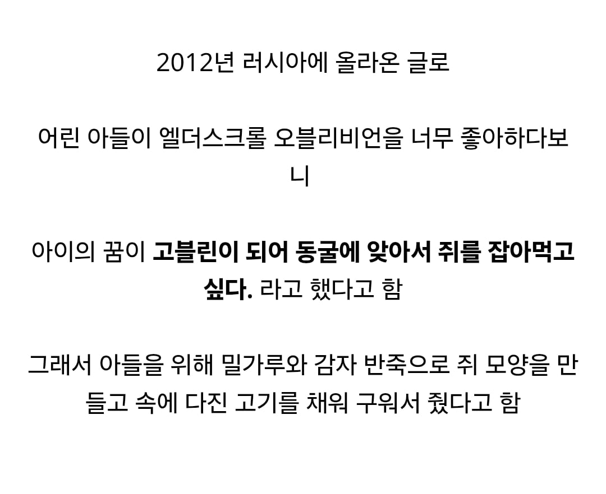
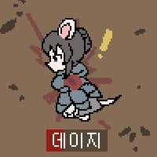

??? : 스키버고기가 아니잖아

??? : 어머니 쥐고기는 정말 맛있는거네요. 이젠 제가 직접 잡아서 갖다드릴게요.
쥐...아니지? 만드신 거... 맞지?
스쿠마를 너무 많이 마셨구만 아들이
20년후 - 하... 그때 먹었던 쥐고기 맛이 아니야!
착한 고블린
와 잘만드시네 ㄷㄷㄷ
???: (학교에서) 난 오늘 쥐를 먹었다
그래서 아이를 동굴에 가뒀단 말입니까??
모조품이 이정도라고...?
진짜는과연..?
ㅋㅋ 주인공이 아니라 고블린 되고 싶다는건 무슨 초식임
쥐고기 다 판다
저때 꼬맹이였으면 지금쯤 험한일 당하진 않았을지 괜히 불쌍해진다
동남아 정글러들이 자꾸 트랩으로 쥐 잡아 먹어서
그러려니 함
에드형도 인정한 쥐고기
와.... 아들 행복사..,+ 진짜를 향한 탐구심 상승